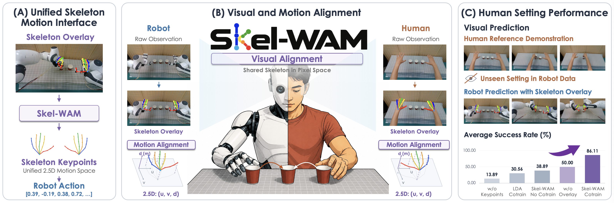
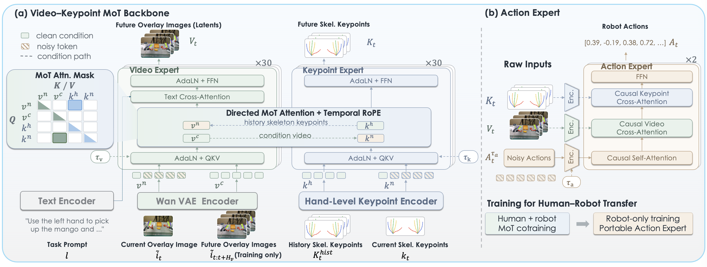

Video
Abstract
Robot demonstrations are expensive to collect and often provide limited distributional coverage of task variations. Human videos offer a low-cost source of complementary manipulation experience, but learning from them requires bridging embodiment gaps in visual appearance and action spaces. We introduce Skel-WAM, a world action model that bridges these differences through a unified hand-skeleton motion interface. The key insight is to align human and robot motion through a common hand topology, combining skeleton overlays that ground motion in the scene with structured 2.5-D keypoints that encode explicit hand kinematics. Video and Keypoint Experts jointly learn visual and skeletal dynamics through a Mixture-of-Transformers, while a separate robot-trained Action Expert maps these predictions to executable controls. This separation enables human and robot demonstrations to directly supervise shared dynamics without requiring robot action labels for human videos. Across four real-world bimanual tasks and seven simulated tasks, Skel-WAM achieves average success rates of 79.86% and 63.29%, surpassing the strongest baseline by 22.22 and 8.28 percentage points, respectively. Human–robot cotraining more than doubles real-world success on task variations absent from robot training data, from 38.89% to 86.11%. These results demonstrate that a shared skeletal interface enables joint learning across human and robot data and expands robot task coverage through complementary human demonstrations.
Overview
A unified hand-skeleton motion interface

Skel-WAM is a world action model that bridges human and robot manipulation through a unified hand-skeleton motion interface.
- Scene-grounded skeleton overlays and structured 2.5-D keypoints represent human and robot motion in a shared space, enabling cross-embodiment alignment and joint prediction of visual dynamics and skeletal motion.
- This representation allows Skel-WAM to learn robot-missing task variations from human demonstrations without robot action labels, raising average success from 38.89% to 86.11%.
Model architecture

Skel-WAM combines Video, Keypoint, and Action Experts through conditional flow matching, separating cross-embodiment dynamics learning from executable robot control.
- Video–Keypoint Mixture-of-Transformers. The Video Expert predicts future skeleton-overlay video latents using the current observation, task instruction, and keypoint history. The Keypoint Expert predicts future hand trajectories conditioned on video features. Layer-aligned experts exchange information through stream-wise attention.
- Causal Action Expert. A separate Transformer conditions action prediction on video latents and structured keypoints. Causal attention gives each action access only to action and condition tokens at or before its timestep.
- Human–robot cotraining. Human and robot overlay videos and skeletons first train the shared MoT. The Action Expert is then trained exclusively on robot data, without propagating action gradients into the backbone.
- Inference. The model sequentially samples future video, skeleton keypoints, and robot actions, keeping observed anchors fixed and requiring no future observations.
01 / Real-world manipulation
Real-World Manipulation
We evaluate four real-world bimanual tasks under robot-demonstrated settings. Skel-WAM achieves 79.86% average SR and 89.24% PSR with robot-only training.
02 / Human-to-robot transfer
Human-to-Robot Transfer (High Lights)
Under fixed task instructions, human demonstrations cover four variations absent from robot training data: middle-cup position, wrist rotation, distractors in the target box, and target drawer height.
Human demonstration
Human–robot cotraining
Cotrained video prediction
● Robot demonstration setting ● Human demonstration setting
Middle-cup position
Human demonstrations vary the middle-cup position in Stack Cups; this variation is absent from the robot demonstrations.
+55.56 percentage points
Full-task success · 9 evaluation trials per task.
These task variations are absent from robot training data.
Compared with robot-only training, human–robot cotraining raises average SR from 38.89% to 86.11% and average PSR from 61.11% to 95.14% on the four robot-missing task variations.
03 / Visual grounding
Visual Grounding
Skeleton overlays and structured keypoints play complementary roles in human-to-robot transfer: keypoints encode finger-level trajectories, while overlays ground them in the scene.
Build the motion interface
The full cotrained model achieves 86.11% average SR. Removing overlays reduces SR to 50.00%; removing keypoints reduces SR below 17%, with or without overlays.
Measured average success on human-covered variations.
Inspect the predicted future
Skel-WAM · with overlays
Without skeleton overlays
Model-generated video predictions.
04 / Background generalization
Background Generalization
Under a new background, Skel-WAM achieves 58.33% average SR and 76.04% PSR, exceeding EgoVLA by 20.83 and 19.79 percentage points, respectively.
Robot execution · unseen background
Visual prediction · unseen background
Robot-only training · 6 evaluation trials per task across four tasks. Future-video predictions maintain task-relevant motion and preserve the unseen test-time background.
05 / Simulation
Simulation Experiments
On seven EgoVLA-Sim tasks, Skel-WAM achieves 63.29% SR and 78.42% PSR. All methods use robot data only, without additional robot pretraining or human–robot cotraining.
EgoVLA-Sim
Stack can
Robot execution
Visual prediction
93 episodes per task: 27 in-distribution and 66 with unseen tables or backgrounds. Object positions are sampled within the benchmark range in both settings.
06 / Results
Results
Real-world evaluation: four tasks; 24 trials per task, except Stack Cups (18).
Detailed results
SR measures full-task completion. PSR measures task-specific milestones.
| Method | Avg. ↑ | Stack Cups | Pour Water | Place Fruit | Put into Drawer |
|---|---|---|---|---|---|
| ACT | 12.32 / 44.39 | 11.76 / 58.82 | 16.67 / 60.42 | 0.00 / 37.50 | 20.83 / 20.83 |
| Fast-WAM | 38.89 / 50.69 | 38.89 / 48.61 | 41.67 / 60.42 | 37.50 / 52.08 | 37.50 / 41.67 |
| LDA | 42.01 / 53.30 | 38.89 / 56.94 | 41.67 / 54.17 | 45.83 / 58.33 | 41.67 / 43.75 |
| EgoVLA | 57.64 / 69.10 | 55.56 / 76.39 | 70.83 / 85.42 | 45.83 / 56.25 | 58.33 / 58.33 |
| Skel-WAM | 79.86 / 89.24 | 77.78 / 90.28 | 87.50 / 95.83 | 70.83 / 83.33 | 83.33 / 87.50 |
| Method | Avg. ↑ | Position | Rotation | Disturbance | Height |
|---|---|---|---|---|---|
| LDA-cotrain | 30.56 / 49.31 | 33.33 / 41.67 | 22.22 / 44.44 | 44.44 / 61.11 | 22.22 / 50.00 |
| Skel-WAM, no cotrain | 38.89 / 61.11 | 11.11 / 50.00 | 77.78 / 83.33 | 66.67 / 66.67 | 0.00 / 44.44 |
| Skel-WAM, cotrain | 86.11 / 95.14 | 66.67 / 91.67 | 100.00 / 100.00 | 77.78 / 88.89 | 100.00 / 100.00 |
| Cotrain w/o both | 16.67 / 31.25 | 11.11 / 19.44 | 33.33 / 61.11 | 22.22 / 33.33 | 0.00 / 11.11 |
| Cotrain w/o keypoints | 13.89 / 34.03 | 11.11 / 25.00 | 22.22 / 55.56 | 22.22 / 38.89 | 0.00 / 16.67 |
| Cotrain w/o overlay | 50.00 / 68.75 | 44.44 / 86.11 | 77.78 / 83.33 | 44.44 / 55.56 | 33.33 / 50.00 |
| Method | Average SR | Average PSR |
|---|---|---|
| ACT | 12.50 | 34.38 |
| Fast-WAM | 25.00 | 37.50 |
| LDA | 29.17 | 42.71 |
| EgoVLA | 37.50 | 56.25 |
| Skel-WAM | 58.33 | 76.04 |
Robot-only training; 6 trials per task across four tasks.
| Method | Avg. ↑ | Stack Can | Push Box | Open Drawer | Close Drawer | Flip Mug | Pour Balls | Open Laptop |
|---|---|---|---|---|---|---|---|---|
| ACT | 24.88 / 55.93 | 12.90 / 13.98 | 16.13 / 87.73 | 22.58 / 70.43 | 59.14 / 96.77 | 2.15 / 2.15 | 5.38 / 64.52 | 55.91 / 55.91 |
| LDA | 34.87 / 61.52 | 22.58 / 23.66 | 22.58 / 93.55 | 21.51 / 76.34 | 66.67 / 78.49 | 50.54 / 50.54 | 2.15 / 43.55 | 58.06 / 64.52 |
| Fast-WAM | 37.33 / 56.22 | 29.03 / 29.03 | 19.35 / 89.25 | 38.71 / 83.33 | 97.85 / 98.92 | 24.73 / 26.88 | 17.20 / 29.57 | 34.41 / 36.56 |
| EgoVLA | 55.01 / 65.31 | 56.99 / 56.99 | 64.52 / 80.65 | 49.46 / 73.16 | 90.32 / 92.83 | 4.41 / 4.41 | 56.99 / 83.56 | 62.37 / 65.59 |
| Skel-WAM | 63.29 / 78.42 | 58.06 / 59.14 | 66.67 / 97.85 | 49.46 / 86.02 | 100.00 / 100.00 | 45.16 / 45.16 | 27.96 / 61.83 | 95.70 / 98.92 |
| Method | SR | PSR |
|---|---|---|
| Skel-WAM | 63.29 | 78.42 |
| w/o keypoints | 38.40 | 58.14 |
| w/o overlay | 61.90 | 77.88 |
| w/o both | 34.56 | 55.53 |
BibTeX
@article{cai2026skel,
title={Skel-WAM: A Hand-Skeleton-Conditioned World Action Model for Human-to-Robot Manipulation Transfer},
author={Cai, Zetao and Li, Yaping and Wang, Yiqun and Zhan, Xinyu and Yang, Yuyin and Ma, Haoxiang and Li, Kailin and Lu, Tao and Pang, Jiangmiao and Xu, Linning and others},
journal={arXiv preprint arXiv:2609.21514},
year={2026}
}